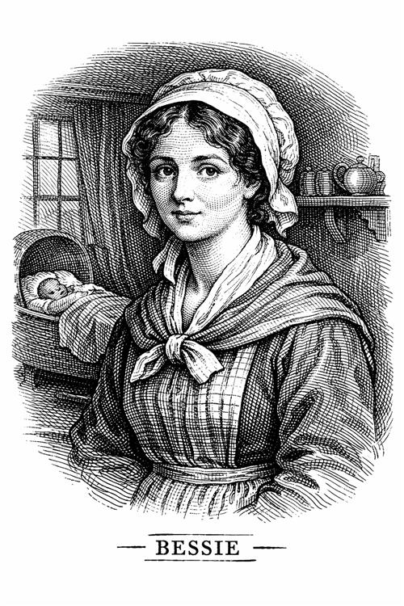

Bessie

Bessie es la niñera de los niños de Gateshead. A pesar de ser la empleada de la señora Reed, ella no puede evitar ser la primera aliada de Jane manteniendo una relación cercana, hasta tal punto de ser la única figura materna que la niña conoce en sus primeros años de vida.
Personalidad e impacto en la vida de Jane
Nos da la impresión de ser una mujer con un carácter variable, ya que puede ser regañona y brusca, pero como hemos mencionado ya posee una bondad que contrasta con la crueldad de los Reed.
Para Jane es un consuelo tenerla, ya que su familia la trata como si fuera un monstruo, una carga, mientras que Bessie le canta canciones, le cuenta cuentos de hadas, le da trozos de pan tostado...
Bessie es la que le da las primeras pistas a Jane acerca de su familia. Le habla sobre su padre el clérigo.
Además, antes de que la niña parta a Lowood, Bessie le confiesa que la prefiere a ella que a sus primos los Reed, reforzando así, su imagen positiva.
Importancia del personaje
La autora no la dibuja como si fuera un ángel, a veces muestra que es injusta con Jane porque tiene miedo de perder su trabajo, lo que le da un matiz muy realista a su personaje.
Cuando Jane es más adulta, Bessie va a visitarla y se sorprende al ver el cambio que ha dado. Le da reconocimiento a Jane y hace de cierre de la etapa de maltratos que la joven sufrió. La niñera fue la que plantó la semilla de la imaginación, con sus historias y canciones, ayudándola así también a sobrevivir a la soledad.